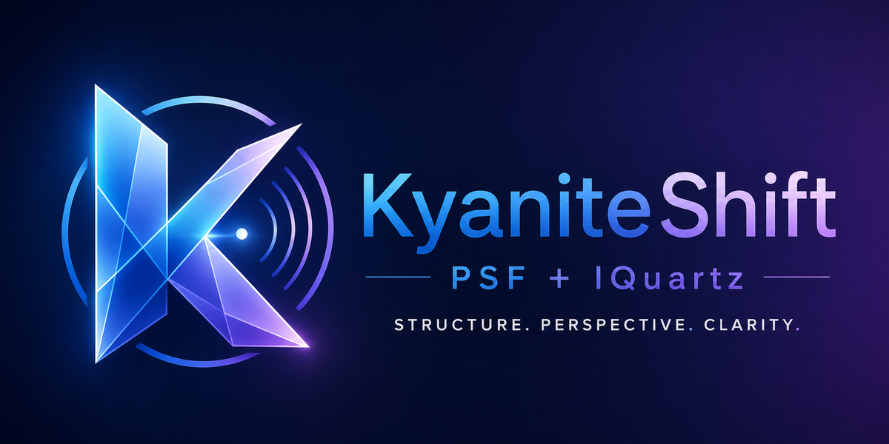
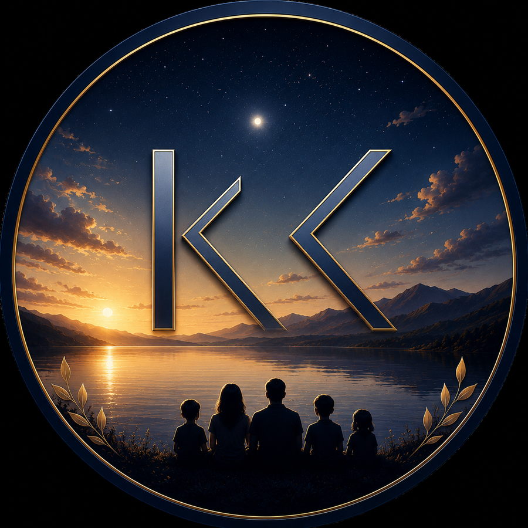
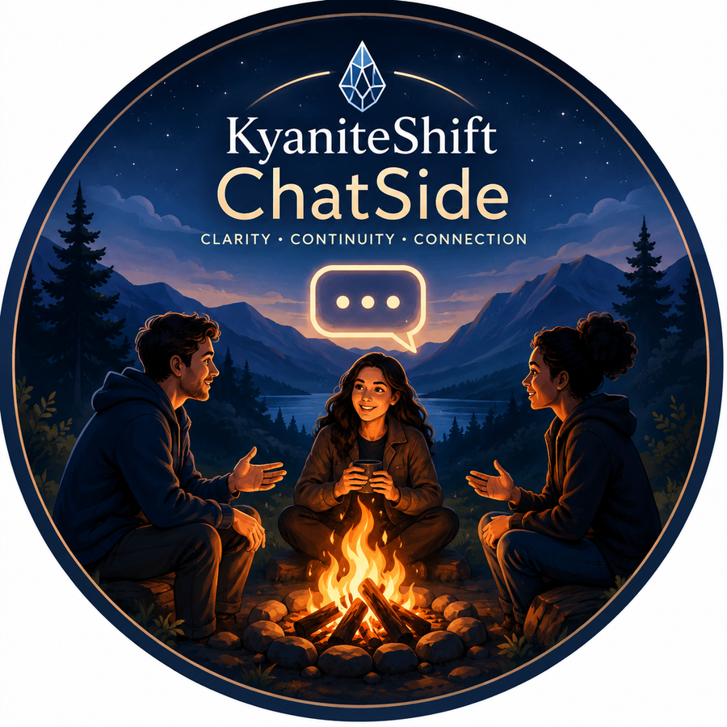
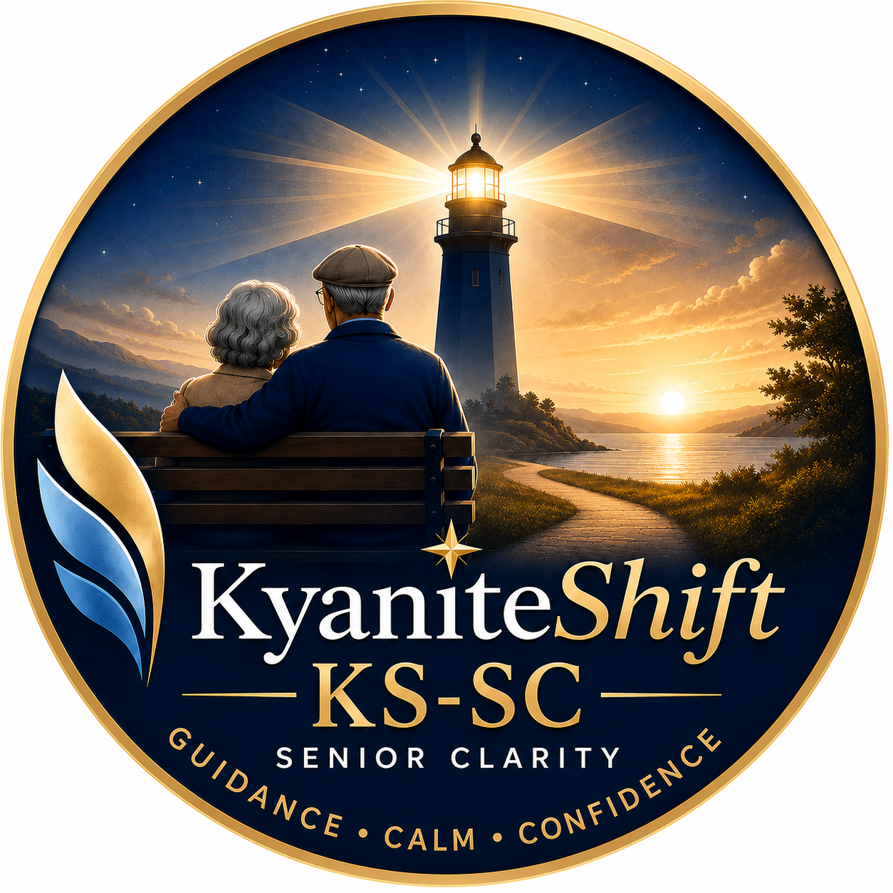
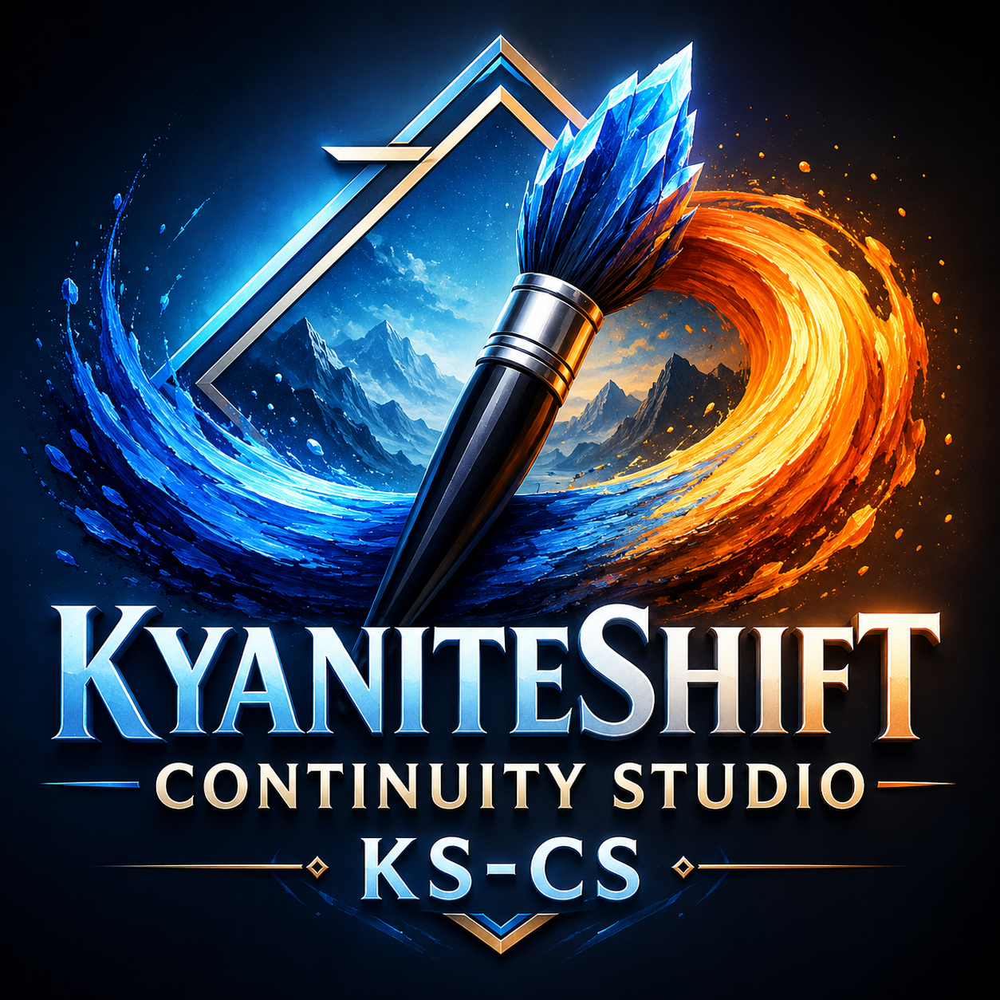

Main
Structured problem framing with PSF + IQuartz.

KyaniteShift helps slow down unclear situations before reacting, fixing, or explaining. It separates what is known, what may be assumed, and what still needs clarification — so the next step starts from a clearer frame.
KyaniteShift is a structured clarity framework for slowing down unclear situations before reaction. It separates what is stated, what may be assumed, what is still unknown, and where interpretations may diverge.
What KyaniteShift is not: KyaniteShift is not therapy, legal advice, medical advice, financial advice, or a replacement for human judgment. It is a structured clarity aid. In emergencies or safety situations, seek immediate human or professional support.
KyaniteShift
Independent structured problem-framing framework. Custom GPTs open in ChatGPT and require ChatGPT access.
KyaniteShift branches share the same clarity-first foundation with different audiences, tones, and expression paths.
Structured problem framing with PSF + IQuartz.

Family-friendly clarity with a softer visible tone.

Conversational continuity for ongoing chat-style exchanges.

A guiding-light version for calm verification, dignity, and everyday decisions.

A studio branch for turning clarified frames into polished expression.
These links open inside ChatGPT. Users need to be signed in and use their own ChatGPT access.
Core structured problem framing for work, creative, operational, interpersonal, and leadership situations.
Open Main GPTA softer version for everyday confusion, family situations, friendship tension, and simple clarity.
Open FF GPTA conversational branch for ongoing chats, shorter updates, and natural continuity across multiple turns.
Open ChatSide GPTA guiding-light version for confusing conversations, appointments, pressure-filled requests, service issues, and everyday decisions.
Open SC GPTA post-clarity studio for refining K-Bridges, structured frames, reflections, speeches, posts, poetry, artist statements, and public-facing writing.
Open CS GPTA short TikTok-style introduction for KyaniteShift FF. It uses the current KS-FF visual direction: quiet starfield, readable text, gentle pacing, and piano background.
This video introduces KS-FF as a calm, family-friendly way to slow down confusing moments and separate what is known, what may be assumed, and what still needs clarification.
The video is a static site asset. It does not use an API, backend, or external hosting.
Each version uses the same core idea — clarity before reaction — but is shaped for a different situation and tone.
Use for: workplace issues, leadership communication, RCA framing, creative uncertainty, recurring problems, and team alignment.
What it does: separates claims, assumptions, missing information, recurrence, divergence, and the clearest next frame.
Use for: family-friendly reflection, younger/general users, everyday confusion, friendship tension, and softer emotional clarity.
What it does: uses simpler language and a gentler tone while still preserving the KyaniteShift structure.
Use for: ongoing chat-style conversations where full decomposition every turn would feel too heavy.
What it does: keeps the framework active internally while using short updates, natural pacing, and bridges that carry the conversation forward.
Use for: senior clarity, appointments, family concerns, pressure-filled requests, service issues, and everyday decisions.
What it does: helps older adults sort out what is known, what may be assumed, and what still needs to be asked while preserving dignity and independence.
Use for: turning clarified frames, K-Bridges, reflections, and structured ideas into polished communication, public-facing writing, speeches, poetry, artist statements, and meaningful expression.
What it does: preserves continuity of meaning while improving tone, audience fit, semantic precision, pacing, and expression.
KyaniteShift is useful when a situation feels messy, repeated, sensitive, or hard to explain.
Every quarter, leadership and engineering disagree on what “system stability” means. The same debate happens, but nothing changes.
🧩 PSF Claims: The debate repeats each quarter. Assumptions: The same term may be carrying different meanings. Missing Info: Which metrics or decisions define stability? 🔷 IQuartz Recurrence: strong Divergence: high ✦ K Bridge The group may be aligned on wanting stability, but not yet aligned on how stability should be judged, measured, or owned.
If KyaniteShift helped clarify a situation, or if something felt unclear, incomplete, or difficult to use, feedback is welcome. Observations help improve the framework, the GPT branches, and the public guidance around them.
Please send comments or feedback to:
KyaniteShift@gmail.com